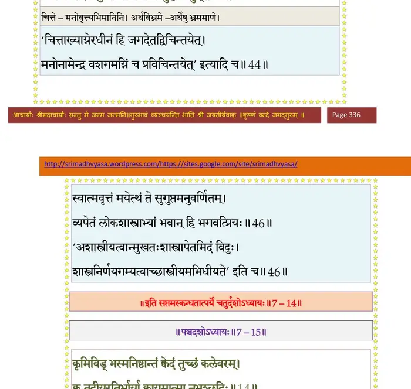

स्कन्ध 7 · अध्याय 14
श्लोक १
युधिष्ठिर उवाच–
गृहस्थ एतां पदवीं विधिना येन चाञ्जसा ।
यायाद् देवऋषे ब्रूहि मादृशो गृहमूढधीः।। १ ।।
गृहस्थ एतां पदवीं विधिना येन चाञ्जसा ।
यायाद् देवऋषे ब्रूहि मादृशो गृहमूढधीः।। १ ।।
श्लोक २
नारद उवाच–
साधु पृष्टं महाभाग लोकानामनुगृह्णता ।
तत्वेन तदहं वक्ष्ये नैष्कर्म्यं येन कर्मणाम्।। २ ।।
साधु पृष्टं महाभाग लोकानामनुगृह्णता ।
तत्वेन तदहं वक्ष्ये नैष्कर्म्यं येन कर्मणाम्।। २ ।।
श्लोक ३
गृहेष्ववस्थितो राजन् क्रियाः कुर्वन् गृहोचिताः ।
वासुदेवार्पणं साक्षादुपासीत महामुनीन्।। ३ ।।
वासुदेवार्पणं साक्षादुपासीत महामुनीन्।। ३ ।।
श्लोक ४
श्रृण्वन् भगवतोऽभीक्ष्णमवतारकथामृतम् ।
श्रद्दधानो यथाकालमुपशान्तजनादृतम्।। ४ ।।
श्रद्दधानो यथाकालमुपशान्तजनादृतम्।। ४ ।।
श्लोक ५
तत्सङ्गाच्छनकैः सङ्गमात्मजायात्मजादिषु ।
विमुञ्चेन्मुञ्चमानेषु स्वयं स्वप्नवदुत्थितः।। ५ ।।
विमुञ्चेन्मुञ्चमानेषु स्वयं स्वप्नवदुत्थितः।। ५ ।।
श्लोक ६
यावदर्थ उपासीनो देहे गेहे च पण्डितः ।
विरक्तो रक्तवत् तत्र नृलोके नरतां न्यसेत्।। ६ ।।
विरक्तो रक्तवत् तत्र नृलोके नरतां न्यसेत्।। ६ ।।
श्लोक ७
ज्ञातयः पितरौ पुत्रा भ्रातरः सुहृदोऽपरे ।
यद् वदन्ति यदिच्छन्ति अनुमोदेत निर्ममः।। ७ ।।
यद् वदन्ति यदिच्छन्ति अनुमोदेत निर्ममः।। ७ ।।
श्लोक ८
दिव्यं भौमं चान्तरिक्षं वित्तमच्युतनिर्मितम् ।
तत्सर्वमुपभुञ्जीरन् न स्वीकुर्यात् स्वतो बुधः।। ८ ।।
तत्सर्वमुपभुञ्जीरन् न स्वीकुर्यात् स्वतो बुधः।। ८ ।।
श्लोक ९
यावद् भ्रियेत जठरं तावत् स्वत्वं हि देहिनाम् ।
अधिकं योऽभिमन्येत स स्तेनो दण्डमर्हति।। ९ ।।
अधिकं योऽभिमन्येत स स्तेनो दण्डमर्हति।। ९ ।।
श्लोक १०
नृगोखराश्वमर्कांस्तु सरीसृपविमक्षिकान् ।
आत्मनः पुत्रवत् पश्येत् तैरेषामन्तरं कियत्।। १० ।।
आत्मनः पुत्रवत् पश्येत् तैरेषामन्तरं कियत्।। १० ।।
श्लोक ११
त्रिवर्गं नातिकृच्छ्रेण भजेत गृहमेध्यपि ।
यथादेशं यथाकालं यावत् दैवोपपादितम्।। ११ ।।
यथादेशं यथाकालं यावत् दैवोपपादितम्।। ११ ।।
श्लोक १२
आश्वाघान्तेवसायिभ्यः कामान् संविभजेद् यथा ।
आप्त्वैतान् महतो दारान् नृणां सत्त्वग्रहो यतः।। १२ ।।
आप्त्वैतान् महतो दारान् नृणां सत्त्वग्रहो यतः।। १२ ।।
श्लोक १३
जह्याद् यदर्थे स्वान् प्राणान् हन्याद् वा पितरं गुरुम् ।
तस्यां स्वत्वं स्त्रियां जह्याद् यस्तेन ह्यजितो जितः।। १३ ।।
तस्यां स्वत्वं स्त्रियां जह्याद् यस्तेन ह्यजितो जितः।। १३ ।।
श्लोक १४
कृमिविड्भस्मनिष्ठान्तं क्वेदं तुच्छं कलेवरम् ।
क्व तदीयरतिर्भार्या क्वायमात्मा नभश्छदिः।। १४ ।।
क्व तदीयरतिर्भार्या क्वायमात्मा नभश्छदिः।। १४ ।।
श्लोक १५
सिद्धैर्यज्ञावशिष्टार्थैः कल्पयेद् वृत्तिमात्मनः ।
शेषे स्वत्वं त्यजेत् प्राज्ञः पदवीं महतामियात्।। १५ ।।
शेषे स्वत्वं त्यजेत् प्राज्ञः पदवीं महतामियात्।। १५ ।।
भागवततात्पर्यनिर्णय
श्लोक १६
देवानृषींश्च भूतानि पितॄनात्मानमन्वहम् ।
स्ववृत्त्याऽगतवित्तेन यजेत पुरुषं पृथक् ।। १६ ।।
स्ववृत्त्याऽगतवित्तेन यजेत पुरुषं पृथक् ।। १६ ।।
श्लोक १७
यर्ह्यात्मनोऽधिकारोऽस्ति सर्वाः स्युर्यज्ञसम्पदः ।
वैतानिकेन विधिना अग्निहोत्रादिना यजेत्।। १७ ।।
वैतानिकेन विधिना अग्निहोत्रादिना यजेत्।। १७ ।।
श्लोक १८
न ह्यग्निमुखतोऽयं वै भगवान् सर्वयज्ञभुक् ।
इज्येत हविषा राजन् यथा विप्रमुखैर्हुतैः ।। १८ ।।
इज्येत हविषा राजन् यथा विप्रमुखैर्हुतैः ।। १८ ।।
श्लोक १९
तस्माद् ब्राह्मणदेवेषु मर्त्यादिषु यथार्हतः ।
तैस्तैः कामैर्यजेच्चैनं क्षेत्रज्ञं ब्राह्मणाननम्।। १९ ।।
तैस्तैः कामैर्यजेच्चैनं क्षेत्रज्ञं ब्राह्मणाननम्।। १९ ।।
श्लोक २०
कुर्यादपरपक्षीयं मासि प्रोष्ठपदे द्विजः ।
श्राद्धं पित्रोर्यथावित्तं तद्बन्धूनां च वित्तवान्।। २० ।।
श्राद्धं पित्रोर्यथावित्तं तद्बन्धूनां च वित्तवान्।। २० ।।
श्लोक २१
अयने विषुवे कुह्वां व्यतीपाते दिनक्षये ।
चन्द्रादित्योपरागे च द्वादश्यां श्रवणेषु च ।। २१ ।।
चन्द्रादित्योपरागे च द्वादश्यां श्रवणेषु च ।। २१ ।।
श्लोक २२
तृतीयायां शुक्लपक्षे नवम्यामथ कार्तिके ।
चतसृष्वप्यष्टकासु हेमन्ते शिशिरे तथा ।। २२ ।।
चतसृष्वप्यष्टकासु हेमन्ते शिशिरे तथा ।। २२ ।।
श्लोक २३
माघे च सितसप्तम्यां मघाराकासमागमे ।
राकया वाऽनुमत्या वा मासर्क्षाणि युतान्यपि ।। २३ ।।
राकया वाऽनुमत्या वा मासर्क्षाणि युतान्यपि ।। २३ ।।
भागवततात्पर्यनिर्णय

श्लोक २४
द्वादश्यामनुराधा स्यात् श्रवणस्तिस्र उत्तराः ।
तिसृष्वेकादशी चासु जन्मर्क्षं सौम्ययोगयुक् ।। २४ ।।
तिसृष्वेकादशी चासु जन्मर्क्षं सौम्ययोगयुक् ।। २४ ।।
श्लोक २५
त एते श्रेयसः काला नृणां श्रेयोविवर्धनाः ।
कुर्यात् सर्वात्मनैतेषु श्रेयोऽमोघं तदायुषः ।। २५ ।।
कुर्यात् सर्वात्मनैतेषु श्रेयोऽमोघं तदायुषः ।। २५ ।।
श्लोक २६
येषु स्नानं जपो होमो व्रतं देवद्विजार्चनम् ।
पितृदेवनृभूतेभ्यो यद् दत्तं तद्ध्यनश्वरम् ।। २६ ।।
पितृदेवनृभूतेभ्यो यद् दत्तं तद्ध्यनश्वरम् ।। २६ ।।
श्लोक २७
संस्कारकालो जायाया अपत्यस्यात्मनस्तथा ।
प्रेतसंस्था मृताहश्च कर्मण्यभ्युदये नृप ।। २७ ।।
प्रेतसंस्था मृताहश्च कर्मण्यभ्युदये नृप ।। २७ ।।
श्लोक २८
अथ देशान् प्रवक्ष्यामि धर्मादिश्रेयआवहान् ।
स वै पुण्यतमो देशः सत्पात्रं यत्र लभ्यते ।। २८ ।।
स वै पुण्यतमो देशः सत्पात्रं यत्र लभ्यते ।। २८ ।।
श्लोक २९
विश्वं भागवतो यत्र जगदेतच्चराचरम् ।
यत्र ह ब्राह्मणकुलं तपोविद्यादयान्वितम् ।। २९ ।।
यत्र ह ब्राह्मणकुलं तपोविद्यादयान्वितम् ।। २९ ।।
श्लोक ३०
यत्र यत्र हरेरर्चा स देशः श्रेयसां पदम् ।
यत्र गङ्गादयो नद्यः पुराणेषु च विश्रुताः।। ३० ।।
यत्र गङ्गादयो नद्यः पुराणेषु च विश्रुताः।। ३० ।।
श्लोक ३१
सरांसि पुष्करादीनि क्षेत्राण्यर्हाश्रितान्युत ।
कुरुक्षेत्रं गयशिरः प्रयागः पुलहाश्रमः ।। ३१ ।।
कुरुक्षेत्रं गयशिरः प्रयागः पुलहाश्रमः ।। ३१ ।।
श्लोक ३२
नैमिषं फल्गुनं सेतुः प्रभासोऽथ कुशस्थली ।
वाराणसी मधुपुरी पम्पा बिन्दुसरस्तथा ।। ३२ ।।
वाराणसी मधुपुरी पम्पा बिन्दुसरस्तथा ।। ३२ ।।
श्लोक ३३
नारायणाश्रमो नन्दा सीतारामाश्रमादयः ।
सर्वे कुलाचला राजन् महेन्द्रमलयादयः ।। ३३ ।।
सर्वे कुलाचला राजन् महेन्द्रमलयादयः ।। ३३ ।।
श्लोक ३४
एते पुण्यतमा देशा हरेरर्चाश्रिताः पुनः ।
एतान् देशान् निषेवेत श्रेयस्कामो ह्यभीक्ष्णशः ।। ३४ ।।
एतान् देशान् निषेवेत श्रेयस्कामो ह्यभीक्ष्णशः ।। ३४ ।।
श्लोक ३५
धर्मो ह्यत्रोदितः पुंसां सहस्राधिफलोदयः ।
पात्रं चात्र निरुक्तं वै कविभिः पात्रवित्तमैः ।। ३५ ।।
पात्रं चात्र निरुक्तं वै कविभिः पात्रवित्तमैः ।। ३५ ।।
श्लोक ३६
हरिरेवैक उर्वीश यन्मयं च चराचरम् ।
देवर्ष्यर्हत्सु वै सत्सु तत्र ब्रह्मात्मजादिषु ।
राजन् यदग्रपूजायां मतः पात्रतयाऽच्युतः।। ३६ ।।
देवर्ष्यर्हत्सु वै सत्सु तत्र ब्रह्मात्मजादिषु ।
राजन् यदग्रपूजायां मतः पात्रतयाऽच्युतः।। ३६ ।।
भागवततात्पर्यनिर्णय
श्लोक ३७
जीवराशिभिराकीर्ण आण्डकोशाङ्घ्रिपो महान् ।
तन्मूलत्वादच्युतेज्या सर्वजीवात्मतर्पणम्।। ३७ ।।
तन्मूलत्वादच्युतेज्या सर्वजीवात्मतर्पणम्।। ३७ ।।
श्लोक ३८
पुराण्यनेन सृष्टानि नृतिर्यगृषिदेवताः ।
शेते जीवेन रूपेण पुरेषु पुरुषो ह्यसौ ।। ३८ ।।
शेते जीवेन रूपेण पुरेषु पुरुषो ह्यसौ ।। ३८ ।।
श्लोक ३९
तेष्वीशो भगवान् राजन् तारतम्येन वर्तते ।
तस्मात् पात्रं हि पुरुषो यावानात्मा यथेयते ।। ३९ ।।
तस्मात् पात्रं हि पुरुषो यावानात्मा यथेयते ।। ३९ ।।
श्लोक ४०
दृष्ट्वा तेषां मिथो नॄणामवज्ञामात्मनो नृप ।
त्रेतादिषु हरेरर्चा क्रियायै कविभिः कृता ।। ४० ।।
त्रेतादिषु हरेरर्चा क्रियायै कविभिः कृता ।। ४० ।।
श्लोक ४१
ततोऽर्चायां हरिं केचिच्छ्रद्धया च सपर्यया ।
उपासते उपासा हि नार्थदा पुरुषद्विषाम् ।। ४१ ।।
उपासते उपासा हि नार्थदा पुरुषद्विषाम् ।। ४१ ।।
श्लोक ४२
पुरुषेष्वपि राजेन्द्र सुपात्रं ब्राह्मणं विदुः ।
तपसा विद्यया तुष्ट्या धत्ते वेदं हरेस्तनुम् ।। ४२ ।।
तपसा विद्यया तुष्ट्या धत्ते वेदं हरेस्तनुम् ।। ४२ ।।
श्लोक ४३
तन्वोऽस्य ब्राह्मणा राजन् कृष्णस्य जगदात्मनः ।
पुनन्तः पादरजसा त्रिलोकीं दैवतं महत् ।। ४३ ।।
पुनन्तः पादरजसा त्रिलोकीं दैवतं महत् ।। ४३ ।।
।। इति श्रीमद्भागवते सप्तमस्कन्धे चतुर्दशोऽध्यायः ।।